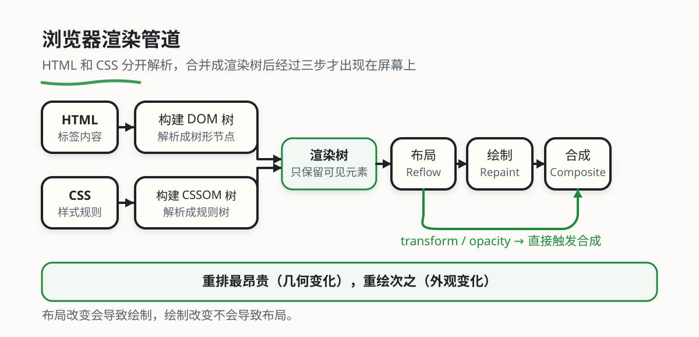

浏览器渲染管道
本章目录 · 1 节
浏览器渲染原理
核心问题 为什么有些网页流畅如丝，有些却卡成PPT？ 浏览器是怎么把一堆HTML、CSS、JavaScript代码变成你眼前看到的网页的？本章将带你深入浏览器的"车间"，理解它的工作流程，从而写出性能更好的网页。
这篇文章会带你学什么？
| 章节 | 内容 | 学完能干嘛 |
|---|---|---|
| 第 1 章 | 为什么要理解渲染管线 | 理解性能优化的必要性 |
| 第 2 章 | 渲染管线的五个阶段 | 掌握浏览器渲染的基本流程 |
| 第 3 章 | 构建DOM树和CSSOM树 | 理解HTML和CSS如何被解析 |
| 第 4 章 | 构建渲染树 | 知道哪些元素会被渲染 |
| 第 5 章 | 布局与重排 | 避免触发昂贵的布局计算 |
| 第 6 章 | 绘制与重绘 | 减少不必要的绘制操作 |
| 第 7 章 | 合成与GPU加速 | 利用GPU提升动画性能 |
| 第 8 章 | 事件循环 | 理解JavaScript的执行机制 |
| 第 9 章 | 性能优化实战 | 掌握常用的性能优化技巧 |
每一章都从"理解原理"开始，不需要你会手写优化代码。遇到性能问题时，随时回来查就行。

1. 理解"渲染管线的动机
1.1 从"能跑"到"跑得快"：前端开发的进阶之路
刚开始学前端时，我们只关心代码"能不能跑"——页面能显示出来，按钮能点击，就算成功了。但随着项目变大，用户变多，你很快会发现一个残酷的现实：同样的功能，有人写的页面丝般顺滑，有人写的却卡顿到用户想摔鼠标。
这就像学开车。新手只关心"车能不能开动"，但老司机会关心"什么时候该换挡、什么时候该刹车、怎么开最省油"。浏览器就是你开的那辆"车"，理解它的"工作习性"，你才能开得又快又稳。
🐢 新手思维（只关注功能）
- 只要页面能显示就行
- 卡顿是浏览器的问题
- 性能优化是后期才考虑的事
进阶思维（关注体验）
- 流畅度是用户体验的核心
- 理解浏览器工作流程
- 写代码时就考虑性能
理解渲染管线，就是从"能跑"到"跑得快"的关键一步。
1.2 案例：优化"后反而更卡了
小张的性能踩坑记 小张是一家电商公司的前端工程师，负责优化商品详情页。这个页面展示商品信息时卡得要死，用户投诉不断。
小张想："页面卡应该是因为DOM太多了，我先用display:none隐藏起来，修改完再显示，这样浏览器就不会重复渲染了吧？"
于是他写了这样的代码：
// 你以为的"优化"
const container = document.getElementById('list')
container.style.display = 'none' // 先隐藏，应该不会触发渲染了吧？
for (let i = 0; i < 1000; i++) {
const item = document.createElement('div')
item.style.width = Math.random() * 100 + 'px' // 随机宽度
container.appendChild(item)
}
container.style.display = 'block' // 最后显示，一次性渲染
结果测试后发现，页面更卡了！小张懵了：明明已经"优化"了，为什么反而更慢？
后来前端负责人看了代码，点出问题所在：虽然元素被隐藏了，但你每次修改style.width仍然会触发浏览器的样式计算和布局标记，浏览器在后台做了大量无用功。
正确的做法是用DocumentFragment在内存中批量操作，最后一次性插入DOM，只触发一次渲染。
核心启示 不了解浏览器的工作流程，你可能会"自作聪明"地写出一堆"优化代码"，结果反而让性能更差。理解渲染管线，你才知道哪些操作是昂贵的、哪些是廉价的，从而避免在错误的地方用力。
2. 核心概念：渲染管线定义
🤔 什么是"渲染"？ 渲染（Rendering），简单说就是浏览器把代码"画"成你看到的网页的过程。
你可以把它想象成印刷厂印书：
- HTML = 书稿内容（文字、图片、章节）
- CSS = 排版要求（字体大小、颜色、间距）
- JavaScript = 动态修改（作者临时改稿、调整排版）
浏览器拿到这些"材料"后，要经过一道道"工序"，最后才能"印刷"出你看到的网页。这一系列工序，就是渲染管线（Rendering Pipeline）。
为了帮你更好地理解，我们用一家面包店来比喻浏览器的渲染流程。
2.1 用面包店比喻理解渲染管线
想象你在经营一家面包店，每天要为顾客制作各种面包。这个过程中涉及到的环节，与浏览器的渲染流程惊人地相似：
| 阶段 | 🥖 面包店比喻 | 浏览器实际工作 | 具体例子 |
|---|---|---|---|
| 1. 准备食材 | 整理原料清单（面粉、鸡蛋、奶油...） | 构建DOM树：把HTML解析成树形结构 | 你写<div><p>Hello</p></div>，浏览器解析成div→p→"Hello"的树 |
| 2. 准备配方 | 整理配方卡（每种面包的配料比例） | 构建CSSOM树：把CSS解析成规则树 | 你写.title { color: red }，浏览器记录".title的文字是红色" |
| 3. 制定计划 | 根据原料和配方，决定今天要做什么面包 | 构建渲染树：合并DOM和CSSOM，只保留可见元素 | <script>标签不显示，所以不在渲染树里 |
| 4. 摆放位置 | 把面包摆到展示柜，决定每个面包放哪 | 布局（Layout）：计算每个元素的尺寸和位置 | 算出"这个div宽200px、高100px，在屏幕的(50, 50)位置" |
| 5. 上色装饰 | 给面包刷蛋液、撒芝麻、挤奶油 | 绘制（Paint）：把元素的颜色、边框、阴影等"画"出来 | 把"红色文字"真正画到屏幕上 |
| 6. 组装完成 | 把所有面包层叠在一起，摆成漂亮的样子 | 合成（Composite）：把多个图层合并成最终画面 | GPU把背景层、文字层、图片层合并成一张完整画面 |
从表格中你能看到什么？ 逐行解读这张表，看清渲染管线的每个阶段：
阶段1-2（准备阶段）：浏览器先"看懂"你的代码。HTML和CSS是分开解析的，因为它们职责不同——HTML决定"有什么内容"，CSS决定"长什么样"。
阶段3（合并阶段）：为什么要"合并"？因为不是所有HTML元素都会显示（比如<head>、<script>），浏览器需要把"可见元素"和"它们的样式"结合在一起，形成一张"施工图"。
阶段4-5（绘制阶段）：布局是"算位置"，绘制是"上颜色"。布局改变（比如改宽度）会导致绘制，但绘制改变（比如改颜色）不会导致布局。
阶段6（合成阶段）：现代浏览器的"魔法"。传统方式是"一次性画完"（CPU慢），现代方式是"分层绘制+GPU合成"（快），这就是为什么transform动画比width动画流畅的原因。
2.2 渲染管线的五个阶段
3. 第一阶段：构建DOM树和CSSOM树
3.1 树"化的动机
🤔 什么是DOM？ DOM（Document Object Model，文档对象模型），是浏览器把HTML文档转换成的一种树形结构，方便JavaScript操作页面元素。
你可以把它想象成家谱树：
- 最顶端是"祖先"（
<html>） - 下面是"子代"（
<body>、<head>） - 再下面是"孙代"（
<div>、<p>、<span>）
为什么要转成树？ 因为树形结构很方便"查找"和"修改"。比如你想找到"所有class是title的元素"，浏览器可以在树上快速搜索，而不是从一堆乱七八糟的文本里慢慢找。
浏览器拿到HTML后，不会马上显示，而是要先"理解"它。这个过程分为三步：
第一步：词法分析——把代码拆成"词"
<div class="container">
<p>Hello World</p>
</div>
浏览器看到这段代码，会先"拆词"：
<div>→ "开始标签div"class="container"→ "属性class，值container"<p>→ "开始标签p"Hello World→ "文本内容"</p>→ "结束标签p"</div>→ "结束标签div"
第二步：语法分析——把"词"组装成"节点"
浏览器根据HTML规则，把这些"词"组装成"节点"：
- 元素节点：
<div>、<p> - 属性节点：
class="container" - 文本节点：
"Hello World"
第三步：构建树——建立"父子关系"
最后，浏览器根据标签的嵌套关系，构建出树形结构：
Document（文档根节点）
└── html
└── body
└── div.class = "container"
└── p
└── "Hello World"
3.2 CSSOM树：样式的"规则手册"
🤔 什么是CSSOM？ CSSOM（CSS Object Model，CSS对象模型），是浏览器把CSS规则转换成的树形结构，用来计算每个元素的最终样式。
你可以把它想象成服装搭配指南：
- 上层规则（body的字体）会影响下层（所有子元素）
- 如果有冲突（比如同一元素多个规则指定不同颜色），要按"优先级"决定用哪个
- 最终算出每个元素该穿什么"衣服"
CSSOM的构建过程和DOM类似，但有一个关键区别：CSS是"继承"和"层叠"的。
查看CSSOM构建过程 原始CSS：
body {
font-size: 16px;
color: #333;
}
.container {
width: 100%;
color: red; /* 会覆盖body的color */
}
.container p {
font-weight: bold;
}
构建后的CSSOM树：
StyleSheet
├── body
│ ├── font-size: 16px
│ └── color: #333
└── .container
├── width: 100%
├── color: red (优先级更高，覆盖body的color)
└── p
└── font-weight: bold
3.3 我的CSS"不生效的原理
坑一：CSS选择器权重冲突
查看常见错误
/* 你写的CSS */
#header { color: red; } /* id选择器，权重100 */
.title { color: blue; } /* class选择器，权重10 */
/* HTML */
<div id="header" class="title">这段文字是什么颜色？</div>
你以为是蓝色，结果是红色。因为id选择器的权重（100）比class选择器（10）高。
坑二：HTML标签没闭合，浏览器"自动修复"
查看浏览器如何修复错误HTML
<!-- 你写的HTML -->
<div>
<p>这是一段文字
</div>
<!-- 浏览器修复后 -->
<div>
<p>这是一段文字</p> <!-- 浏览器自动帮你闭合标签 -->
</div>
浏览器很"宽容"，会自动修复你的错误。但这种宽容是有代价的——浏览器需要额外计算来猜测你的意图，会影响性能。
4. 第二阶段：构建渲染树
4.1 需要"渲染树的必要性
你可能会问："已经有了DOM树和CSSOM树，为什么还要再构建一个渲染树？直接用DOM不行吗？"
答案是：DOM树包含了太多"无用"信息。
比如下面这段HTML：
<html>
<head>
<title>页面标题</title>
<style>/* CSS代码 */</style>
<script>/* JavaScript代码 */</script>
</head>
<body>
<div class="container">
<p>可见内容</p>
</div>
<div style="display: none">
<p>隐藏内容（display:none）</p>
</div>
</body>
</html>
DOM树会包含所有元素：
<head>、<title>、<style>、<script>（这些不显示）display: none的div（也不显示）
但渲染树只包含"要画到屏幕上"的元素：
- 去掉
<head>及其子元素 - 去掉
display: none的div
4.2 渲染树的构建规则
浏览器在构建渲染树时，会遵循一套规则：
| 场景 | 处理方式 | 示例 | 性能影响 |
|---|---|---|---|
display: none |
完全排除出渲染树 | 元素及其子元素都不可见 | ✅ 减少渲染工作量 |
visibility: hidden |
包含在渲染树中，但不绘制 | 占据空间，但完全透明 | ⚠️ 仍需布局计算 |
opacity: 0 |
包含在渲染树中，但透明 | 可交互（能点击），但看不见 | ⚠️ 仍需布局计算 |
| 不在视口内 | 包含在渲染树中，暂不绘制 | 滚动到视口时才绘制 | ⚠️ 但仍在渲染树中 |
从表格中你能看到什么？ 关键发现：
display: none是唯一"真正省性能"的隐藏方式，因为元素完全不在渲染树里，浏览器不会为它做任何布局和绘制工作。
而visibility: hidden和opacity: 0虽然"看不见"，但仍在渲染树中，浏览器仍需计算它们的布局（占据空间）。如果你需要"隐藏但不影响布局"（比如做淡入淡出动画），可以用opacity；如果需要"完全隐藏且不占空间"，用display: none。
4.3 设置了display:none，页面还是卡的原理
❗ ❌ 常见误区：以为display:none的元素"不存在" 很多人以为设置
display: none后，元素就"消失"了，怎么操作都不会影响性能。这是错误的！
虽然display: none的元素不在渲染树中，但你通过JavaScript修改它的属性时，浏览器仍需要：
- 重新计算样式（匹配CSS规则）
- 跟踪变化（为未来显示做准备）
看下面这个"优化"例子：
查看"无效优化"的代码
// ❌ 你以为的"优化"：先隐藏，修改完再显示
const container = document.getElementById('list')
container.style.display = 'none'
// 疯狂操作DOM
for (let i = 0; i < 1000; i++) {
const item = document.createElement('div')
item.style.width = Math.random() * 100 + 'px' // 改变宽度！
item.textContent = `Item ${i}`
container.appendChild(item)
}
container.style.display = 'block'
// 问题：每次修改style.width，浏览器都要重新计算样式，
// 即使元素是display:none！
✅ 正确的优化姿势：
// 使用DocumentFragment批量操作
const container = document.getElementById('list')
const fragment = document.createDocumentFragment() // 虚拟容器
// 所有操作都在内存中的fragment上进行
for (let i = 0; i < 1000; i++) {
const item = document.createElement('div')
item.style.width = Math.random() * 100 + 'px'
item.textContent = `Item ${i}`
fragment.appendChild(item) // 不影响真实DOM
}
// 一次性插入真实DOM，只触发一次渲染
container.appendChild(fragment)
5. 第三阶段：布局与重排
5.1 布局概述
🤔 什么是布局（Layout）？ 布局，也叫回流（Reflow），是浏览器计算渲染树中每个元素"在什么位置、占多大空间"的过程。
你可以把它想象成装修设计师测量房间：
- 先测量每个房间的长宽
- 决定家具摆在哪里
- 算出每个家具的坐标
为什么布局很"贵"？ 因为一个元素的变化可能影响其他元素。比如你把一个div变宽了，它旁边的div可能被挤下去，导致整个页面重新计算。
5.2 触发重排的"雷区"
以下是常见的会触发重排的操作，建议收藏并背诵：
| 类别 | 属性/操作 | 性能影响 | 替代方案 |
|---|---|---|---|
| 尺寸 | width, height, min/max-width/height |
💀💀💀 | 用transform: scale()代替 |
| 位置 | top, right, bottom, left |
💀💀💀 | 用transform: translate()代替 |
| 边距 | margin, padding |
💀💀 | 用transform或gap代替 |
| 边框 | border-width |
💀💀 | 尽量避免频繁修改 |
| 内容 | 文字内容变化、图片加载 | 💀💀 | 预留空间，避免布局抖动 |
| 字体 | font-size, line-height |
💀💀💀 | 尽量避免频繁修改 |
| 显示 | display值改变 |
💀💀💀 | 用visibility或opacity代替（如不需要完全隐藏） |
| 查询 | offsetWidth, offsetHeight等 |
💀💀💀💀💀 | 批量读取，避免布局抖动 |
从表格中你能看到什么？ 关键发现：
- 几何属性（宽高位置）最昂贵：它们会触发完整的布局计算
- 查询属性比修改更危险：读取
offsetWidth会强制同步布局（详见5.4节） - transform和opacity是性能最好的：它们不触发重排，只触发合成
5.3 我的动画卡成PPT的原理
坑：用width做动画
查看性能差的动画代码
/* ❌ 坏的动画：触发重排 */
.box {
width: 100px;
transition: width 0.3s;
}
.box:hover {
width: 200px; /* 改变宽度会触发重排！ */
}
每一帧动画都会触发重排，浏览器需要：
- 重新计算宽度
- 重新计算位置（可能影响其他元素）
- 重新绘制
✅ 好的动画：用transform
/* ✅ 好的动画：只触发合成 */
.box {
width: 100px;
transform: scaleX(1);
transition: transform 0.3s;
}
.box:hover {
transform: scaleX(2); /* 缩放不触发重排！ */
}
transform直接由GPU处理，不会触发重排和重绘，动画丝般顺滑。
5.4 性能杀手：强制同步布局
❗ 💀 最危险的性能问题：布局抖动 强制同步布局（Forced Synchronous Layout），也叫布局抖动（Layout Thrashing），是最常见也是最严重的性能问题。
它的原因是：JavaScript在读取布局属性（如offsetWidth）时，浏览器必须立即执行布局计算，才能返回准确值。
如果你"读写交替"，就会导致浏览器反复"布局→读取→布局→读取"，形成恶性循环。
查看布局抖动的代码
// ❌ 极坏：读写交替，导致布局抖动
const elements = document.querySelectorAll('.item')
for (let i = 0; i < elements.length; i++) {
const height = elements[i].offsetHeight // 读取 → 强制布局
elements[i].style.width = (height * 2) + 'px' // 写入 → 标记需要重排
// 下一次循环的读取又会强制布局...恶性循环！
}
// 如果有100个元素，就会触发100次布局计算！
✅ 正确的优化姿势：读写分离
const elements = document.querySelectorAll('.item')
// 第一步：批量读取（先全部读完）
const heights = []
for (let i = 0; i < elements.length; i++) {
heights.push(elements[i].offsetHeight) // 只触发一次布局
}
// 第二步：批量写入（再全部写）
requestAnimationFrame(() => {
for (let i = 0; i < elements.length; i++) {
elements[i].style.width = (heights[i] * 2) + 'px' // 只触发一次重排
}
})
6. 第四阶段：绘制与重绘
6.1 绘制概述
🤔 什么是绘制（Paint）？ 绘制，是浏览器把"布局计算好"的元素真正"画"到屏幕上的过程。
你可以把它想象成给房间刷漆：
- 布局阶段 = 量尺寸、画线
- 绘制阶段 = 真正刷漆、贴壁纸
绘制没有布局那么昂贵，但也不便宜。 频繁绘制仍会影响性能，尤其是复杂元素（阴影、渐变等）。
6.2 触发重绘的信号
与重排不同，重绘只涉及"外观"的改变，不涉及"几何"的改变：
| 类别 | 属性 | 性能影响 | 备注 |
|---|---|---|---|
| 颜色 | color, background-color |
💀 | 最常见的重绘触发者 |
| 背景 | background-image, background-position |
💀💀 | 图片比纯色慢 |
| 边框 | border-color, border-style |
💀 | 改变边框颜色/样式 |
| 文字 | text-decoration, text-shadow |
💀💀 | 阴影比纯文字慢 |
| 盒阴影 | box-shadow |
💀💀💀 | 复杂的阴影很慢 |
| 圆角 | border-radius |
💀 | 改变圆角大小 |
| 透明度 | opacity |
✅ | 特殊：不触发重绘，只触发合成 |
从表格中你能看到什么？ 关键发现：
opacity是特殊的！它和transform一样，不会触发重绘，而是直接触发合成阶段。这就是为什么用opacity做淡入淡出动画性能最好的原因。
另外，阴影和渐变比重绘更昂贵，因为它们需要复杂的像素计算。如果你的页面有很多box-shadow，考虑用伪元素或图片代替。
6.3 我的hover效果卡的原理
坑：用box-shadow做hover动画
查看性能差的hover效果
/* ❌ 坏的hover效果：box-shadow动画很慢 */
.card {
box-shadow: 0 2px 4px rgba(0, 0, 0, 0.1);
transition: box-shadow 0.3s;
}
.card:hover {
box-shadow: 0 8px 16px rgba(0, 0, 0, 0.2); /* 阴影很慢！ */
}
box-shadow需要逐像素计算，动画时会卡顿。
✅ 好的做法：用transform或伪元素
/* ✅ 好的hover效果：用transform */
.card {
transform: translateY(0);
transition: transform 0.3s, box-shadow 0.3s;
}
.card:hover {
transform: translateY(-4px); /* 只在hover时改阴影，不做动画 */
box-shadow: 0 8px 16px rgba(0, 0, 0, 0.2);
}
7. 第五阶段：合成与GPU加速
7.1 合成概述
🤔 什么是合成（Composite）？ 合成，是现代浏览器的"魔法"，它把页面的不同部分分成多个层（Layer），然后利用GPU（图形处理器）来并行合成最终的画面。
你可以把它想象成Photoshop的图层：
- 传统方式 = 所有东西画在一层上（CPU串行，慢）
- 合成方式 = 分层画，最后合并（GPU并行，快）
为什么合成快？ 因为GPU擅长处理"图像合成"这种并行任务，比CPU快几十倍。
7.2 哪些元素会被提升到"合成层"
浏览器会自动将某些元素提升到独立的合成层。以下是常见的触发条件：
| 触发条件 | CSS属性/值 | 性能影响 | 注意事项 |
|---|---|---|---|
| 3D变换 | transform: translate3d(), rotate3d() |
✅✅✅ | 动画性能最佳 |
| 硬件加速hack | transform: translateZ(0) |
✅✅ | 俗称"强制GPU加速" |
| 透明度动画 | opacity变化（配合动画） |
✅✅✅ | 不触发重绘 |
| 固定定位 | position: fixed |
✅ | 避免滚动时重复布局 |
| Will-Change | will-change: transform, opacity |
✅✅ | 提前创建层，注意内存 |
| Canvas/WebGL | <canvas>, WebGL内容 |
✅✅ | 天然在独立层中 |
| Video | <video> |
✅✅ | 独立层，防止相互影响 |
从表格中你能看到什么？ 关键发现：
transform和opacity是性能最好的动画属性，因为它们不触发重排和重绘，直接触发合成。这就是为什么性能优化指南总是说"用transform和opacity做动画"。
但要注意：每个合成层都要占用GPU内存，滥用translateZ(0)会导致内存爆炸（详见7.4节）。
7.3 问题案例：合成层太多反而卡
❗ 💀 过度优化的陷阱 有人听说"GPU加速快"，就给所有元素都加
transform: translateZ(0)，结果页面反而更卡了。
问题原因： 每个合成层需要在GPU中存储一份"纹理"（位图），占用内存。如果一个页面有100个合成层，GPU内存可能被撑爆，导致低端设备崩溃或降级到CPU渲染。
查看"过度优化"的代码
/* ❌ 错误做法：给所有元素都开启GPU加速 */
.card { transform: translateZ(0); }
.button { transform: translateZ(0); }
.icon { transform: translateZ(0); }
/* ... 100个元素都加 ... */
/* 结果：GPU内存爆炸，页面卡死 */
✅ 正确的做法：按需使用
/* 策略1：只给真正需要动画的元素开启 */
.card {
transition: transform 0.3s ease;
}
.card:hover {
transform: translateY(-5px); /* 自动创建合成层 */
}
/* 策略2：用will-change提示浏览器 */
.card {
will-change: transform; /* 提前创建层 */
}
/* 策略3：动画结束后移除 */
.card:not(:hover) {
will-change: auto; /* 释放GPU内存 */
}
8. 事件循环：JavaScript的"分身术"
🤔 什么是事件循环？ 事件循环（Event Loop），是JavaScript实现"异步"的机制。因为JavaScript是单线程的（一次只能做一件事），但它又要处理用户点击、网络请求、定时器等多种任务，所以需要一套"调度系统"来管理这些任务。
你可以把它想象成快递分拣中心：
- Call Stack（调用栈） = 当前正在处理的快递
- Web APIs = 外部合作仓库（定时器、网络请求等）
- Callback Queue（回调队列） = 待处理的快递架
- Event Loop（事件循环） = 分拣机器人（不断检查"是否可以处理下一个任务"）
8.1 宏任务与微任务
早期的JavaScript只有一套任务队列。但随着异步编程变复杂，浏览器引入了两类任务：
| 类型 | 常见来源 | 优先级 | 执行时机 |
|---|---|---|---|
| 宏任务 | setTimeout/setInterval、I/O操作、UI渲染 |
低 | 每个事件循环周期执行一个 |
| 微任务 | Promise.then、MutationObserver |
高 | 当前宏任务结束后，立即清空所有微任务 |
执行顺序的"口诀"：
1. 执行当前宏任务（比如<script>整体）
2. 执行过程中产生的所有微任务（Promise.then等）
↳ 微任务可以产生新的微任务，全部清空后才继续
3. 如果有需要，进行UI渲染（重排/重绘）
4. 开启下一轮事件循环，执行下一个宏任务
8.2 问题案例：Promise比setTimeout快
❗ ❌ 常见误解：setTimeout(fn, 0)会"立即"执行 很多人以为
setTimeout(fn, 0)是"0毫秒后立即执行"，这是错误的理解。
实际上，setTimeout(fn, 0)的含义是："至少等待0毫秒后，将回调加入宏任务队列"。但它需要等待当前调用栈清空、微任务队列清空、可能的UI渲染完成后，才能执行。
查看执行顺序
console.log('1. Start')
setTimeout(() => {
console.log('2. setTimeout callback')
}, 0)
Promise.resolve().then(() => {
console.log('3. Promise.then')
})
console.log('4. End')
// 你以为的输出顺序：
// 1. Start
// 4. End
// 2. setTimeout callback ← setTimeout(0)不是立即吗？
// 3. Promise.then
// 实际的输出顺序：
// 1. Start
// 4. End
// 3. Promise.then ← Promise.then比setTimeout先执行！
// 2. setTimeout callback
执行流程图解：
调用栈（Call Stack） 宏任务队列 微任务队列
[setTimeout callback] [Promise.then callback]
1. console.log('1. Start')
→ 输出: 1. Start
2. setTimeout(fn, 0)
→ 将回调加入宏任务队列 ← [setTimeout callback]
3. Promise.resolve().then()
→ 将回调加入微任务队列 ← [Promise.then callback]
4. console.log('4. End')
→ 输出: 4. End
5. 调用栈清空，检查微任务队列
→ 发现Promise.then回调
→ 执行: console.log('3. Promise.then')
→ 输出: 3. Promise.then
6. 微任务队列清空
→ 可能需要UI渲染（如果有变化）
7. 检查宏任务队列
→ 发现setTimeout回调
→ 执行: console.log('2. setTimeout callback')
→ 输出: 2. setTimeout callback
核心启示 微任务比宏任务"更急"。如果你希望某个操作在"当前代码块结束后、但UI更新前"尽快执行，用
Promise.then或queueMicrotask。
setTimeout(0)不保证立即执行，它至少会被延迟到当前调用栈清空、微任务队列清空之后。
9. 性能优化实战：让你的网页"飞"起来
理解了渲染管线的工作流程后，我们来看看如何优化。以下是五个最实用的优化技巧。
9.1 黄金法则：避免强制同步布局
问题：交替读取和写入布局属性，导致布局抖动。
查看优化前后对比
// ❌ 极坏：读写交替，导致布局抖动
for (let i = 0; i < elements.length; i++) {
const height = elements[i].offsetHeight // 读取 → 强制布局
elements[i].style.height = (height * 2) + 'px' // 写入 → 标记需要重排
// 下一次循环的读取又会强制布局...恶性循环！
}
// ✅ 极好：先全部读取，再全部写入
// 第一步：批量读取
const heights = []
for (let i = 0; i < elements.length; i++) {
heights.push(elements[i].offsetHeight)
}
// 第二步：批量写入
requestAnimationFrame(() => {
for (let i = 0; i < elements.length; i++) {
elements[i].style.height = (heights[i] * 2) + 'px'
}
})
9.2 使用transform和opacity做动画
问题：用width、height、left、top做动画会触发重排。
查看优化前后对比
/* ❌ 坏的动画：触发重排 */
.box {
transition: width 0.3s, left 0.3s;
}
.box.moving {
width: 200px;
left: 100px;
}
/* ✅ 好的动画：只触发合成 */
.box {
transition: transform 0.3s;
}
.box.moving {
transform: translateX(100px) scaleX(2);
}
9.3 虚拟滚动：解决大数据列表
问题：列表项数量达到数千时，DOM节点数量过多导致性能问题。
核心思想：只渲染视口内可见的列表项（加上少量缓冲），DOM节点数量固定，与数据总量无关。
查看虚拟滚动的实现
<template>
<div class="virtual-list" @scroll="handleScroll">
<!-- 占位元素，撑起滚动条 -->
<div class="phantom" :style="{ height: totalHeight + 'px' }"></div>
<!-- 实际渲染的列表项 -->
<div class="content" :style="{ transform: `translateY(${offsetY}px)` }">
<div
v-for="item in visibleItems"
:key="item.id"
class="item"
:style="{ height: itemHeight + 'px' }"
>
{{ item.name }}
</div>
</div>
</div>
</template>
<script setup>
import { ref, computed } from 'vue'
const props = defineProps({
items: Array,
itemHeight: { type: Number, default: 50 }
})
const scrollTop = ref(0)
const buffer = 5 // 缓冲数量
// 可视区域能显示多少项
const visibleCount = computed(() => 10)
// 起始索引
const startIndex = computed(() =>
Math.max(0, Math.floor(scrollTop.value / props.itemHeight) - buffer)
)
// 结束索引
const endIndex = computed(() =>
Math.min(props.items.length, startIndex.value + visibleCount.value + buffer * 2)
)
// 当前可视的数据
const visibleItems = computed(() =>
props.items.slice(startIndex.value, endIndex.value)
)
// 总高度
const totalHeight = computed(() => props.items.length * props.itemHeight)
// 偏移量
const offsetY = computed(() => startIndex.value * props.itemHeight)
const handleScroll = (e) => {
scrollTop.value = e.target.scrollTop
}
</script>
9.4 防抖与节流：减少事件触发频率
问题：频繁触发的事件（如scroll、resize）会导致性能问题。
查看防抖与节流的实现
// 防抖（Debounce）：延迟执行，如果在延迟时间内再次触发，则重新计时
function debounce(fn, delay) {
let timer = null
return function (...args) {
clearTimeout(timer)
timer = setTimeout(() => fn.apply(this, args), delay)
}
}
// 节流（Throttle）：固定时间间隔执行
function throttle(fn, interval) {
let lastTime = 0
return function (...args) {
const now = Date.now()
if (now - lastTime >= interval) {
lastTime = now
fn.apply(this, args)
}
}
}
// 使用示例
window.addEventListener('scroll', debounce(handleScroll, 200))
window.addEventListener('resize', throttle(handleResize, 100))
9.5 懒加载：延迟加载非关键资源
问题：首屏加载太多资源导致页面打开慢。
查看懒加载的实现
// 图片懒加载
const lazyImages = document.querySelectorAll('img[data-src]')
const imageObserver = new IntersectionObserver((entries, observer) => {
entries.forEach(entry => {
if (entry.isIntersecting) {
const img = entry.target
img.src = img.dataset.src // 加载真实图片
img.removeAttribute('data-src')
observer.unobserve(img) // 停止观察
}
})
})
lazyImages.forEach(img => imageObserver.observe(img))
10. 你现在应该能识别的性能问题
理解了浏览器的渲染管线后，你应该能识别以下常见的性能问题：
| 问题代码 | 问题所在 | 如何描述给AI |
|---|---|---|
element.style.width = ... |
在循环中频繁修改宽度 | "这里会触发多次重排，请改用transform或者批量处理" |
height = element.offsetHeight |
在写入后立即读取布局属性 | "这是强制同步布局，请分离读写操作" |
element.className = ... |
频繁修改class触发样式重新计算 | "用classList.add/remove代替，减少样式计算" |
动画用width/left |
触发重排和重绘，性能差 | "改用transform和opacity做动画" |
给所有元素加translateZ(0) |
滥用GPU加速导致内存爆炸 | "只给需要动画的元素开启GPU加速" |
| 列表项10000个全渲染 | DOM节点过多导致卡顿 | "实现虚拟滚动，只渲染可见区域" |
| scroll事件里直接操作DOM | 触发频率太高导致卡顿 | "用requestAnimationFrame或节流优化" |
box-shadow做hover动画 |
复杂的阴影计算很慢 | "改用transform或伪元素，避免动画阴影" |
如果你认真读了每一章的"踩坑实录"，你还掌握了这些核心概念：
- 渲染管线五阶段：DOM/CSSOM → 渲染树 → 布局 → 绘制 → 合成
- 重排 vs 重绘：重排最昂贵（几何变化），重绘次之（外观变化）
- 强制同步布局：读写交替会导致布局抖动，必须分离
- GPU加速：transform和opacity由GPU处理，性能最佳
- 事件循环：JavaScript是单线程的，靠任务队列实现异步
这些概念会帮你快速定位性能瓶颈。
遇到性能问题时这样跟AI说
- "动画卡顿，检查是否触发了重排或重绘"
- "滚动性能差，可能需要节流或requestAnimationFrame"
- "列表数据量大时卡顿，需要虚拟滚动"
- "频繁修改样式导致性能问题，请用transform优化"
11. 总结：渲染管线优化的本质
通过本文的学习，我们可以得出以下核心结论：
从实践来看：不是优化越多越好，而是优化越"对位"越好。理解浏览器的渲染管线，才能知道在哪里用力、在哪里放手。
从成本视角看：
- 大部分性能浪费来自对布局属性的频繁读写交替，需要通过读写分离、批量处理来解决
- 复杂的动画效果如果触发了重排和重绘，往往源于使用了"错误的属性"，需要通过
transform和opacity来解决 - 面对大量数据的列表渲染，单纯依靠虚拟DOM已经不够，必须结合虚拟滚动等技术
目标是：在给定的浏览器和硬件条件下，让每一个渲染步骤的投入都具备明确的性能收益。
12. 名词对照表
| 英文术语 | 中文对照 | 解释 |
|---|---|---|
| DOM | 文档对象模型 | 浏览器将HTML文档解析后形成的树形结构，JavaScript可以通过DOM API操作页面元素 |
| CSSOM | CSS对象模型 | 浏览器将CSS解析后形成的树形结构，与DOM结合用于计算最终样式 |
| Render Tree | 渲染树 | 由DOM树和CSSOM树合并而成，只包含可见节点，用于后续的布局计算和绘制 |
| Layout | 布局 | 计算渲染树中每个节点的几何信息（位置、大小）的过程，也称为Reflow（重排） |
| Reflow | 重排/回流 | 当元素的尺寸、位置等几何属性发生变化时，浏览器需要重新计算布局的过程 |
| Paint | 绘制/重绘 | 将布局计算后的元素样式（颜色、背景、边框等）绘制到屏幕上的过程 |
| Repaint | 重绘 | 当元素的外观属性（如颜色、背景）变化但不影响几何属性时，触发的绘制更新 |
| Composite | 合成 | 将多个绘制层（Layer）合并为最终屏幕图像的过程，通常在GPU上执行 |
| Layer | 层/合成层 | 浏览器为了优化渲染而创建的独立绘制表面，可以单独变换和合成 |
| Event Loop | 事件循环 | JavaScript的异步执行机制，负责调度宏任务和微任务的执行 |
| Call Stack | 调用栈 | 记录当前正在执行的JavaScript函数的数据结构 |
| Macro Task | 宏任务 | 事件循环中优先级较低的任务类型，如setTimeout、setInterval、I/O操作等 |
| Micro Task | 微任务 | 事件循环中优先级较高的任务类型，如Promise.then、MutationObserver等 |
| Forced Synchronous Layout | 强制同步布局 | 在JavaScript中交替读取和写入布局属性，导致浏览器被迫立即执行布局计算的性能问题 |
| Layout Thrashing | 布局抖动 | 频繁的强制同步布局导致的性能急剧下降现象 |
| Virtual Scrolling | 虚拟滚动 | 只渲染视口内可见列表项的技术，用于优化大数据列表的性能 |
| RAF | 请求动画帧 | 浏览器提供的API，用于在下一次重绘前执行动画相关的JavaScript代码 |